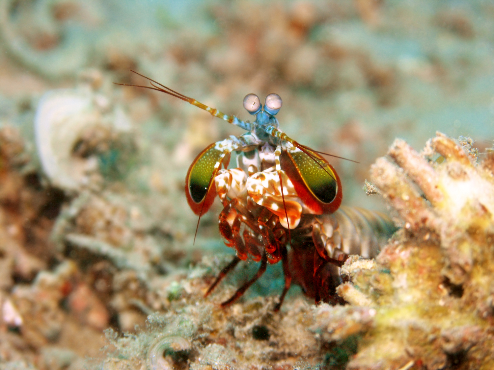

Fatos sobre o Stomatopoda
Informações gerais do Stomatopoda
Nome Científico: Odontodactylus scyllarus
| Reino | Filo | Subfilo | Classe | Subclasse | Ordem |
|---|---|---|---|---|---|
| Animalia | Arthropoda | Crustacea | Malacostraca | Hoplocarida | Stomatopoda |
Visão do Stomatopoda
O Stomatopoda possue o mais complexo sistema de visão de cores do mundo animal, pois enxerga 12 cores primárias, correspondentes aos 12 pigmentos distintos presentes em sua retina. Seu sistema de visão possui doze cones sensíveis à luz e outros quatro que filtram a luz (16 cones no total), o que lhes permite ver cores polarizadas e imagens multiespectrais
Onde são encontrados?
Podem ser encontrados em quase todo o litoral brasileiro, mas não são animais fáceis de se observar pelos seus hábitos mais furtivos. Devem ser manuseados com muita cautela pois são animais preparados para se defender com força, caso sejam incomodados.

Curiosidades
Alguns desses animais são capazes de desferir um dos mais rápidos e violentos golpes do reino animal, um soco que pode apresentar a velocidade de um tiro calibre .22 (equivalente a 720 km/h) e uma pressão de impacto de 600 N/cm². Essa força esmagadora é a responsável pelo seu título de "lagosta-boxeadora" e é capaz de facilmente quebrar a carapaça de um caranguejo, as conchas duras e calcificadas de gastrópodes ou até mesmo quebrar o vidro reforçado de um aquário.

Referências Bibliográficas
- https://www.aquaa3.com.br/curiosidades-camarao-mantis/
- https://pt.wikipedia.org/wiki/Stomatopoda
- http://eonaturalista.blogspot.com/2015/05/stomatopoda-maravilhosos-terrores-dos.html
- https://theoatmeal.com/comics/mantis_shrimp
- https://repositorio.ufpb.br/jspui/handle/tede/4113?locale=pt_BR